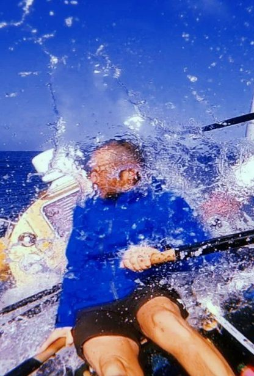
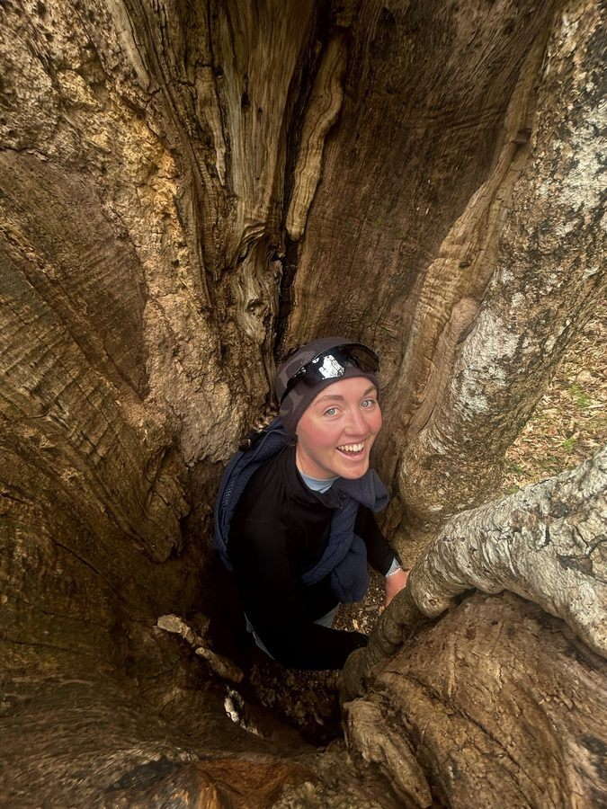
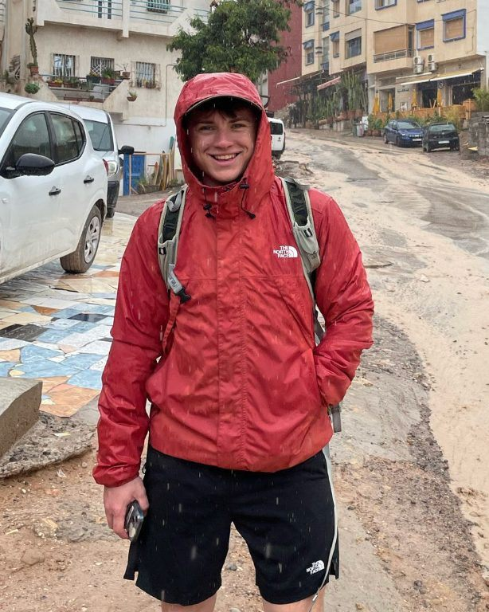
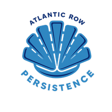
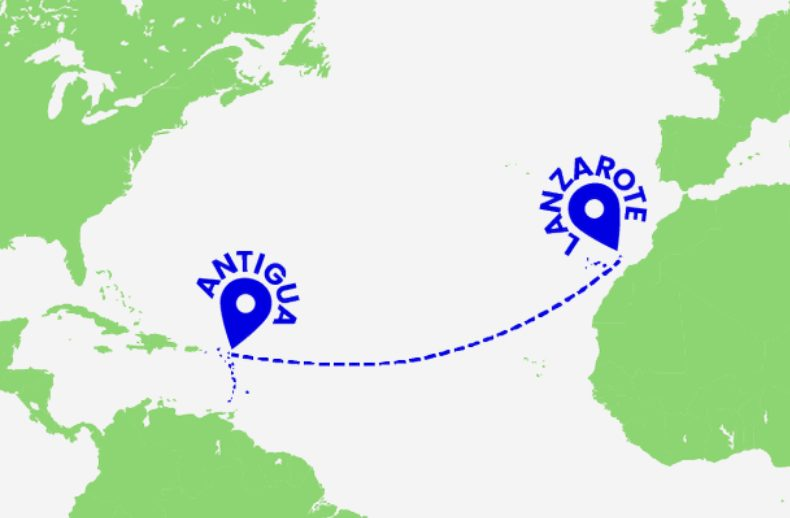
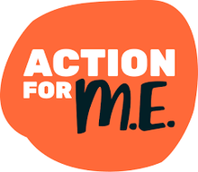
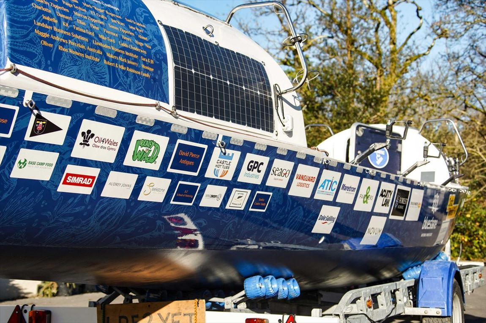
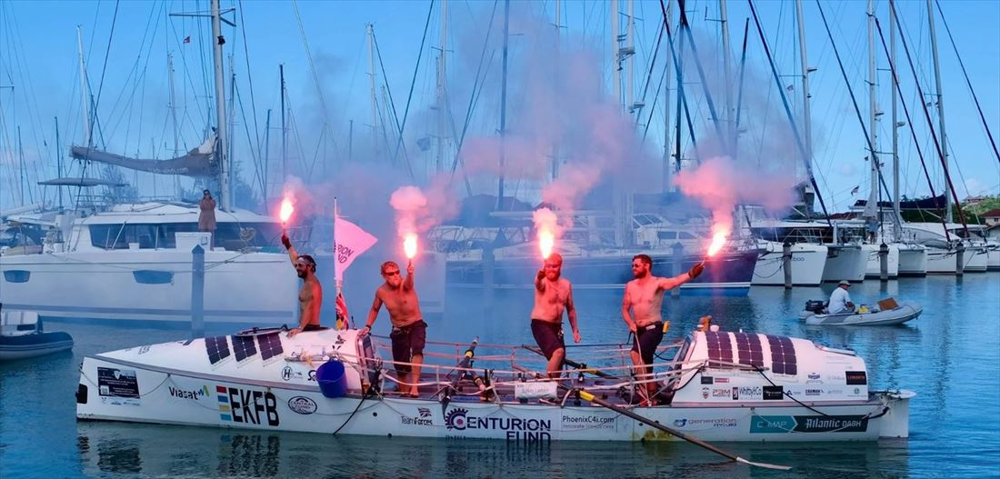
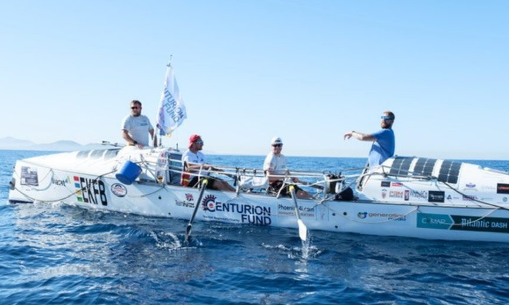
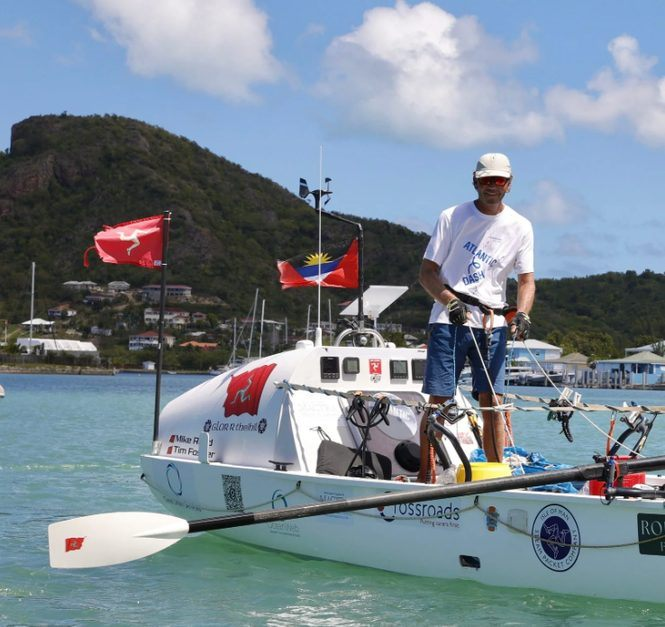

We've been friends since school. This year we decided the best way to test that friendship properly was to lock ourselves in a rowing boat together for up to 50 days in the middle of the Atlantic. Turns out you need a fair amount of help to make that happen — which is where this website, and hopefully you, come in.
An unsupported crossing
Once we push off the dock at Marina Rubicón, that's it. No engine, no support boat, no one to call if it goes wrong — just two oars, one 9.8 metre boat, and around 3,000 nautical miles of open Atlantic between us and Antigua. It puts us among some of the youngest crews to row an ocean. We're told that's either impressive or slightly mad. Possibly both.

Photo: a previous Atlantic Dash crossing — the kind of moment we're training for.
Will & Georgia
Friends since school, reunited seven years and four degrees later for the biggest thing either of us has done.

I'm rowing for Shona — my close friend who's lived with M.E. since she was 16. If sitting in a boat for 50 days raises awareness for that, it's worth every blister.
Rowing in support of Action for M.E.

I'm Type 1 diabetic, which already makes normal life a bit more complicated. The Atlantic won't make that easier — so Diabetes UK felt like the obvious cause to row for.
Rowing in support of Diabetes UK
What is Atlantic Dash?
Atlantic Dash is who's actually getting us out there. They run the crossing every year, usually with 4–6 crews, and handle the training, safety cover and expert guidance that turns "two people in a boat" into an organised (if still fairly terrifying) event.

Organised by Atlantic Dash
Rowing for two causes
Every mile raises awareness and funds for two conditions that already shape our own lives.

Myalgic Encephalomyelitis (M.E.) affects every part of a person's life — even simple physical or mental activity can leave someone utterly debilitated. Action for M.E. supports anyone living with, or caring for someone with, M.E., and funds research into a condition that's still poorly understood. We're rowing on behalf of Georgia's close friend Shona, who has lived with M.E. since she was 16.
Diabetes UK is the country's leading charitable funder of diabetes research, working toward treatment breakthroughs and, eventually, a cure for a condition that affects 9.5 million people worldwide. Will is Type 1 diabetic, which will add its own layer of difficulty to 50 days at sea — and is exactly why this cause matters to us.
Partner with us
We're self-funding as much of this as we can, but a crossing like this comes with real costs — boat charter, race fees, shipping, safety kit. If your business is looking for a genuinely different way to get your name out there, and a good story to tell alongside it, we'd love to talk. Every package below can be tailored.
What you get
- PR and brand exposure — local, national and international coverage through TV, press, radio and social media across the campaign.
- Team endorsement — we'll wear your kit and use your services on the water, and talk about it to our audience throughout.
- First access to media — full rights to photo and video content captured before, during and after the row.
- A genuinely different story — association with an adventure your business hasn't been part of before, plus new connections to the charities we're supporting.
Before, during & after the row
Building the audience
A dedicated social media manager growing our reach, fundraising events across Scotland, Yorkshire and South England, and potential appearances with the boat depending on the partnership.
Live from the Atlantic
Satellite comms returning photo and video straight from the boat, daily content from our social media manager, and press releases keeping the crossing in front of media.
Landfall & beyond
Our full photo and video library shared with partners, interviews on arrival in Antigua and back in the UK, and follow-up events where they make sense.
Sponsorship tiers
At 9.8m long, our boat is a blank canvas — the place to put your brand in front of people before the row and throughout the crossing.

Hull branding from a previous Atlantic Dash campaign — your logo could take a similar spot on ours.
| Benefit | Main SponsorP.O.A. | Gold£20,000 | Silver£10,000 | Bronze£5,000 | £1,000 Club£1,000 |
|---|---|---|---|---|---|
| Boat wrap — design your own | ✓ | — | — | — | — |
| Boat branding | ✓ | ✓ | ✓ | ✓ | ✓ |
| Kit branding | ✓ | ✓ | — | — | — |
| Partner announcement post | ✓ | ✓ | ✓ | ✓ | ✓ |
| Socials endorsement | ✓ | ✓ | ✓ | ✓ | — |
| Video & imagery access | ✓ | ✓ | ✓ | ✓ | ✓ |
| PR interview opportunities | ✓ | ✓ | ✓ | ✓ | — |
| Bespoke content creation | ✓ | ✓ | ✓ | — | — |
| Corporate event attendance | ✓ | ✓ | — | — | — |
| Speaker events | ✓ | ✓ | — | — | — |
| Project Persist event invite | ✓ | ✓ | ✓ | ✓ | — |
| Ergo lessons — learn to row | ✓ | — | — | — | — |
Oar branding is also available across tiers, subject to availability — email us for details.
£250 Club
We appreciate any support that helps us reach the start line. As a thank-you to small businesses, we'll print your company logo on our boat hatches — visible throughout the row.
Goods & services in kind
We'd be grateful for collaborations or individuals who can provide goods or services we need for the row — we'll offer a sponsorship package to reflect the contribution.
What your support funds
After the crossing, we'll sell the equipment and any leftover goods, turning those assets into additional donations for our final fundraising total — so as a sponsor, you're contributing twice over.
The Log
Updates from training, fundraising, and — from January 2028 — the ocean itself. First entries below; check back as we get closer to departure.



Atlantic Dash crossings from past years — the community we're joining this January.
Welcome to Project Persist
This is where we'll be posting as training ramps up, sponsors come on board, and January 2028 gets closer. Follow along here or on Instagram @projectpersist.
Sponsorship packages are open
Our sponsorship package is live — Main Sponsor down to the £250 Club, plus goods and services in kind. Get in touch below if you'd like to be part of the crossing.
More to follow as training and fundraising continue toward January 2028.
Atlantic rowing FAQ
The essential details about Project Persist, the route, and supporting the crossing.
What is Project Persist?
Project Persist is Will and Georgia's attempt to row 3,200 nautical miles across the Atlantic Ocean in January 2028, from Marina Rubicón in Lanzarote to Jolly Harbour in Antigua.
Is the Atlantic crossing unsupported?
Yes. The crossing is planned without an engine or support boat. The crew will row a 9.8-metre boat across the Atlantic as part of Atlantic Dash, with safety cover and expert guidance organised around the event.
Which charities does Project Persist support?
The row raises awareness and support for Action for M.E. and Diabetes UK. Georgia is rowing in support of a close friend living with M.E., while Will is a Type 1 diabetic.
How can a business sponsor the Atlantic row?
Businesses can choose from Project Persist sponsorship packages from the £250 Club through to Main Sponsor, or contribute goods and services in kind. Use the contact form to discuss a tailored partnership.
When and where does the row start?
The departure window is January 2028 from Marina Rubicón, Lanzarote. The exact departure date will be confirmed by Atlantic Dash closer to the time.
Want to join our adventure?
We'd love to hear from your business about partnering with us. Anything you can do to help us reach the start line — and maximise support for our charities — is hugely appreciated.
Message sent — thank you.
We'll get back to you as soon as we can. In the meantime, follow the log or drop us a line directly at projectpersist2028@gmail.com.
Direct contact
Marina Rubicón, Lanzarote to Jolly Harbour, Antigua · 3,200 NM · January 2028